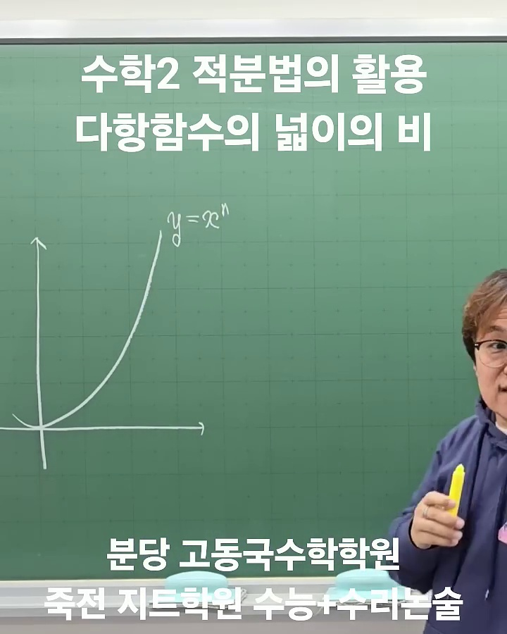
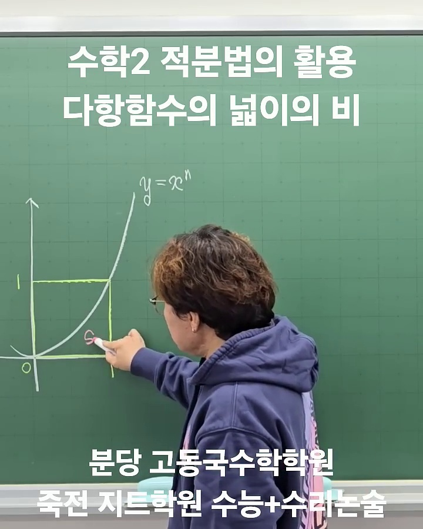
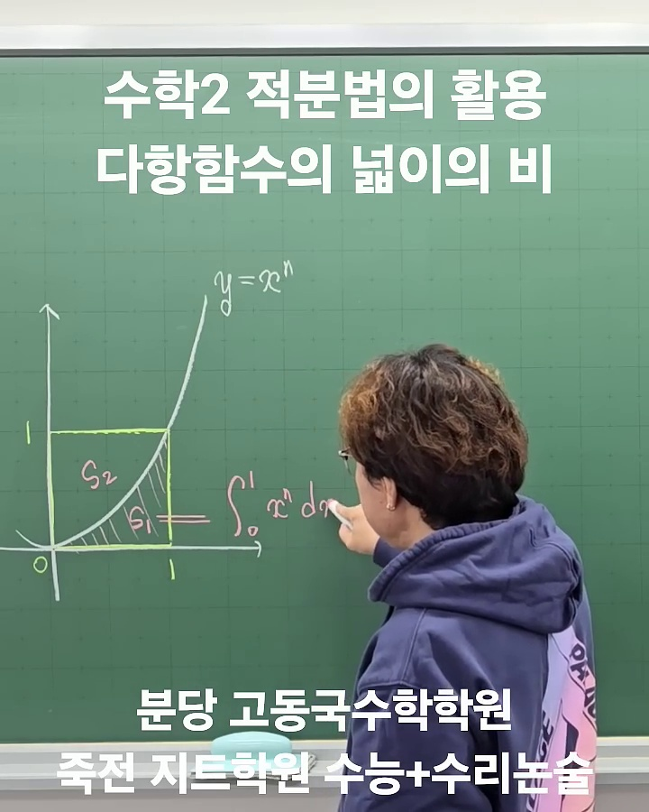
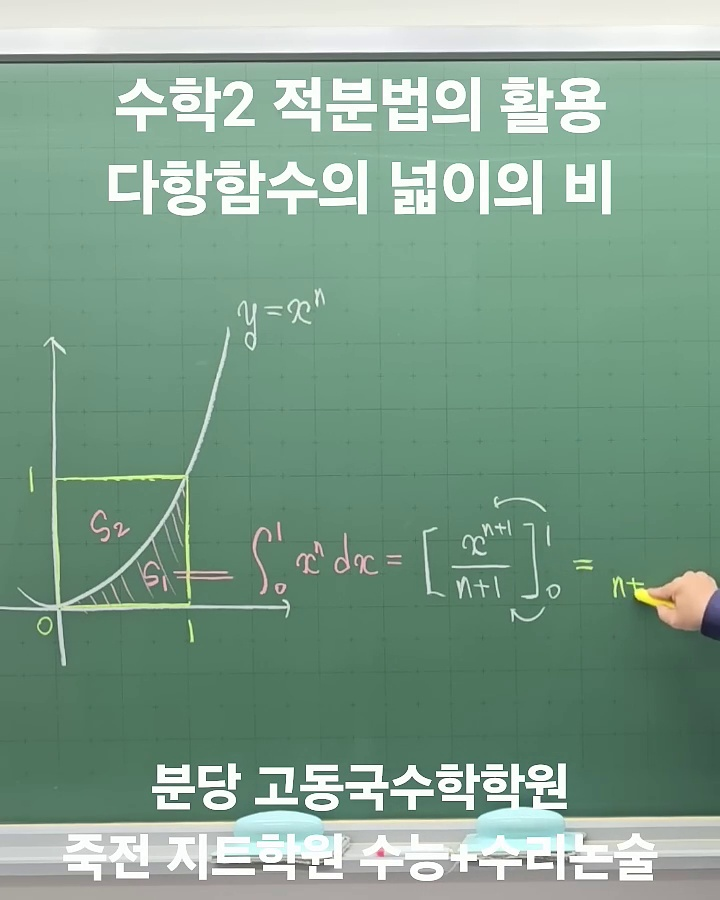
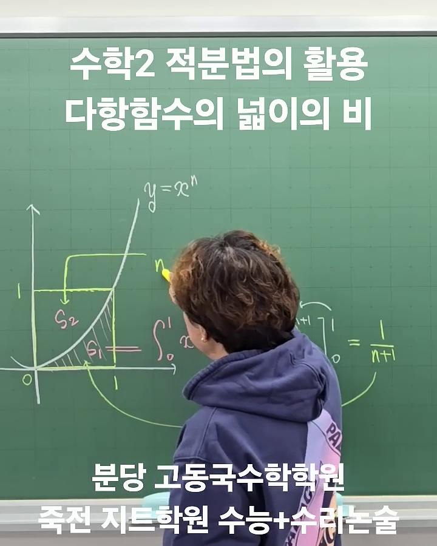
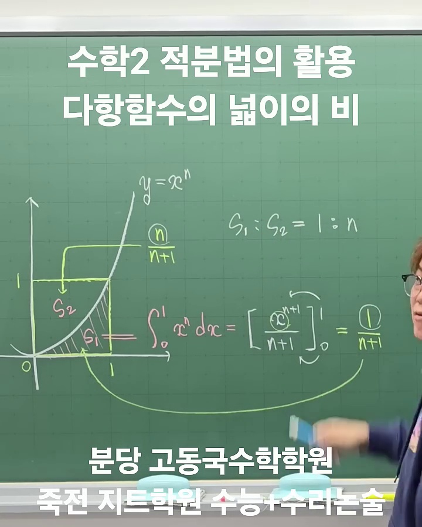

단위 정사각형과 일반 외접 직사각형에서 성립하는 다항함수 넓이의 비 공식과 대한민국 수학교과서 표준 개념·예제·심화 탐구 패키지입니다.
좌표평면에서 한 변의 길이가 $1$인 정사각형 $[0, 1] \times [0, 1]$ 내부를 지나는 곡선 $y = x^n$ ($n$은 자연수)이 있다.
곡선과 $x$축 및 직선 $x = 1$로 둘러싸인 도형의 넓이를 $S_1$, 곡선과 $y$축 및 직선 $y = 1$로 둘러싸인 도형의 넓이를 $S_2$라 하자.
닫힌구간 $[0, 1]$에서 곡선 $y = x^2$과 $x$축 및 직선 $x = 1$로 둘러싸인 도형의 넓이를 $S_1$, 곡선 $y = x^2$과 $y$축 및 직선 $y = 1$로 둘러싸인 도형의 넓이를 $S_2$라 할 때, 넓이의 비 $S_1 : S_2$를 구하시오.

원점 $(0, 0)$과 점 $(1, 1)$을 지나며, $x \ge 0$ 범위에서 증가하는 다항함수 $y = x^n$을 설정합니다. 가로 1, 세로 1인 단위 정사각형(넓이 1)이 형성됩니다.

곡선 $y = x^n$에 의해 정사각형이 두 영역으로 분할됩니다. $S_1$은 곡선 아래 $x$축과의 영역, $S_2$는 곡선 위 $y$축과의 영역입니다.


정적분의 정의에 따라 $S_1 = \int_0^1 x^n dx = \frac{1}{n+1}$임을 엄밀하게 도출합니다.


$S_2 = 1 - S_1 = \frac{n}{n+1}$이므로, 최종적으로 $S_1 : S_2 = 1 : n$이라는 놀라운 규칙성이 완성됩니다.
단위 정사각형 $[0, 1] \times [0, 1]$에서의 원리는 모든 축척 변환(Scaling)과 평행이동에 대하여 성립하는 기하학적 보편 성질입니다. 임의의 거듭제곱 꼴 다항함수에 대하여 외접 직사각형과의 넓이비를 일반화하면 다음과 같습니다.
꼭짓점이 $(x_0, y_0)$이고 최고차항의 계수가 $a > 0$인 거듭제곱 함수 $y = a(x - x_0)^n + y_0$ ($n$은 자연수)에 대하여,
곡선 위의 점 $(x_1, y_1)$과 꼭짓점을 대각선의 양 끝점으로 하는 외접 직사각형 $R$ (가로 $W = |x_1 - x_0|$, 세로 $H = |y_1 - y_0| = a W^n$)을 잡으면, 곡선에 의해 분할되는 두 영역의 넓이 $S_1, S_2$는 다음과 같다:
| 차수 | 대표 함수식 | 넓이의 비 ($S_1 : S_2$) | 외접 사각형 대비 $S_1$의 비율 | 교과서 및 수능·모의평가 출제 연계 |
|---|---|---|---|---|
| 1차 (직선) | $y = ax$ | 1 : 1 | $$\frac{1}{2} S_{\text{Box}}$$ | 직각삼각형의 기본 넓이 분할 |
| 2차 (포물선) | $y = ax^2$ | 1 : 2 | $$\frac{1}{3} S_{\text{Box}}$$ | 이차함수 꼭짓점 분할, 아르키메데스의 포물선 구적법 |
| 3차 (삼차함수) | $y = ax^3$ | 1 : 3 | $$\frac{1}{4} S_{\text{Box}}$$ | 삼차함수의 변곡점 대칭 및 접선과 둘러싸인 넓이 계산 |
| 4차 (사차함수) | $y = ax^4$ | 1 : 4 | $$\frac{1}{5} S_{\text{Box}}$$ | 사차함수 삼중접선 및 대칭축 분할 영역 초고속 계산 |
[문제] 좌표평면에서 곡선 $y = 3x^2$과 $x$축 및 직선 $x = 2$로 둘러싸인 도형의 넓이를 구하시오.
다항함수 $S_1 : S_2 = 1 : n$ 넓이비를 고화질 수학 영상으로 렌더링하는 공식 스크립트입니다.
from manim import *
import numpy as np
class PolynomialAreaRatio(Scene):
def construct(self):
# 1. 제목 타이틀
title = Title("수학II 적분법의 활용: 다항함수 넓이의 비", include_underline=True)
title.set_color(YELLOW)
self.play(Write(title))
self.wait(1)
# 2. 좌표축 설정
axes = Axes(
x_range=[0, 1.4, 0.5],
y_range=[0, 1.4, 0.5],
x_length=5,
y_length=5,
axis_config={"color": BLUE_D, "include_numbers": True},
).to_edge(LEFT, buff=0.8)
# (1, 1) 박스 (직사각형 영역)
box = Polygon(
axes.c2p(0, 0),
axes.c2p(1, 0),
axes.c2p(1, 1),
axes.c2p(0, 1),
stroke_color=WHITE,
stroke_width=2,
stroke_opacity=0.8,
fill_opacity=0
)
box_label = MathTex("1 \\times 1 = 1", font_size=28).next_to(box, UP)
self.play(Create(axes), Create(box), Write(box_label))
self.wait(0.5)
# 3. y = x^n 함수 그래프 초기화 (n=2)
curve_n2 = axes.plot(lambda x: x**2, x_range=[0, 1.15], color=GREEN_B)
curve_label = MathTex("y = x^n", font_size=34, color=GREEN_B).next_to(axes.c2p(1.1, 1.1), UP)
# 영역 S1, S2 색칠
area_s1 = axes.get_area(curve_n2, x_range=[0, 1], color=BLUE_C, opacity=0.6)
# S2 영역 폴리곤 (상단 영역)
points_s2 = [
axes.c2p(0, 0),
*[axes.c2p(x, x**2) for x in np.linspace(0, 1, 30)],
axes.c2p(0, 1)
]
area_s2 = Polygon(*points_s2, color=ORANGE, fill_opacity=0.6, stroke_width=0)
label_s1 = MathTex("S_1", font_size=36, color=BLUE_C).move_to(axes.c2p(0.7, 0.2))
label_s2 = MathTex("S_2", font_size=36, color=ORANGE).move_to(axes.c2p(0.3, 0.7))
self.play(Create(curve_n2), Write(curve_label))
self.play(FadeIn(area_s1), Write(label_s1))
self.play(FadeIn(area_s2), Write(label_s2))
self.wait(1)
# 4. 수식 유도 파트 (우측 패널)
formula_group = VGroup().to_edge(RIGHT, buff=0.8)
f1 = MathTex(
"S_1 = \\int_0^1 x^n dx = \\left[ \\frac{1}{n+1} x^{n+1} \\right]_0^1 = \\frac{1}{n+1}",
font_size=32,
color=BLUE_B
)
f2 = MathTex(
"S_2 = 1 - S_1 = 1 - \\frac{1}{n+1} = \\frac{n}{n+1}",
font_size=32,
color=ORANGE
)
ratio_box = MathTex(
"S_1 : S_2 = \\frac{1}{n+1} : \\frac{n}{n+1} = 1 : n",
font_size=38,
color=YELLOW
)
rect = SurroundingRectangle(ratio_box, color=GOLD, buff=0.2)
boxed_ratio = VGroup(rect, ratio_box)
formula_group.add(f1, f2, boxed_ratio)
formula_group.arrange(DOWN, aligned_edge=LEFT, buff=0.6).to_edge(RIGHT, buff=0.8)
self.play(Write(f1))
self.wait(1)
self.play(Write(f2))
self.wait(1)
self.play(Create(rect), Write(ratio_box))
self.wait(2)manim -pql polynomial_area_ratio_manim.py PolynomialAreaRatio